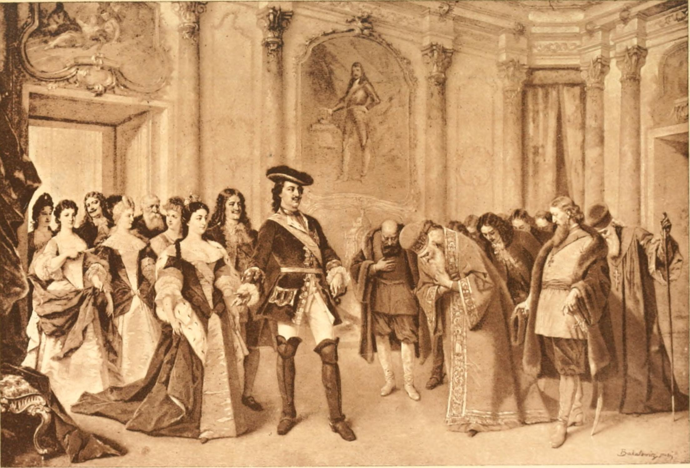

THE DRAMA
Definition of Drama
Drama is a story that is acted out on stage (like in a play) or even in movies. Instead of just reading the story, you watch characters talk, move, and react to each other.
Origin of drama(How Drama Started )
Drama originated from ancient rituals and religious festivals where performances were used to enact stories. It is believed to have developed in ancient Greece from choral performances honoring Dionysus, with Thespis being the first actor. The word "drama" itself comes from the Greek word meaning "action".

- Ancient Rituals & Storytelling : Drama first began when early humans gathered to act out stories. They used dances, chants, and masks to portray gods, heroes, or nature spirits. These performances weren't just for fun - they were sacred rituals to please gods or explain the world. Many cultures like the Egyptians and Native Americans had these dramatic ceremonies long before formal theater existed.
- Greek Drama (500 BCE) : The ancient Greeks turned drama into real theater with stages and scripts. They invented two main types: tragedies (serious stories about gods and heroes) and comedies (funny plays about everyday life). Famous writers like Sophocles and Aristophanes created plays that are still performed today. Theaters were huge outdoor spaces where thousands could watch the performances.
- Roman Drama : The Romans borrowed Greek drama but made it more spectacular. They loved exaggerated comedies with silly mistakes and physical humor. Romans built grand theaters and added exciting elements like chariot races and gladiator fights to their shows. Playwright Plautus wrote popular comedies that influenced later writers like Shakespeare.
- Medieval European Drama : After Rome fell, drama moved into churches. Priests used simple plays to teach Bible stories to people who couldn't read. Later, traveling actors performed morality plays about good vs evil in town squares. These plays often had devils, angels, and characters representing virtues like Truth or Greed.
- African Traditional Drama : African drama was rich with storytelling, masks, and community participation. Griots (storytellers) acted out histories with music and dance. Ceremonies like Yoruba Egungun masquerades combined drama, religion and art. Many African plays taught moral lessons through animal characters and folk tales.
- Modern Drama Shakespeare revolutionized drama with complex characters and beautiful language. Today, drama includes movies, TV shows, and digital content while keeping its ancient roots. Places like Broadway and Nollywood show how drama keeps evolving with new technology and global influences.
Why Drama Began
Drama started because humans naturally love stories and pretending. It helped communities share knowledge before writing existed. From ancient rituals to modern films, drama remains powerful for teaching, entertaining, and bringing people together through shared stories.
Element or Key Parts of a Drama (Play)
- Plot – What happens in the story (the beginning, middle, and end).
- Characters – The people (or animals/things) in the story.
- Dialogue – The words the characters say to each other.
- Setting – Where and when the story takes place (e.g., a village in Nigeria, a school in America, etc.).
- Theme – The main lesson or message (e.g., "Love is powerful" or "Cheating leads to trouble").
- Conflict – The big problem in the story (e.g., two friends fighting, someone trying to survive, etc.).
- Stage Directions – Small notes in the script that tell actors what to do (e.g., [shouts angrily] or [walks away slowly]).
Types of Drama (Plays)
- Tragedy – A sad story where the main character usually fails or dies (e.g., Romeo and Juliet).
- Comedy – A funny story with a happy ending (e.g., silly misunderstandings or jokes).
- Tragicomedy – A mix of sad and funny moments.
- Farce – Super silly and exaggerated (like cartoons but acted out).
- Melodrama – Over-the-top emotions (people crying loudly, villains being extra evil, etc.).
How Drama is Performed
- Scripted Drama – Actors follow a written script (like reading from a book).
- Improvisation (Improv) – Actors make up the story as they go (no script!).
Cool Tricks Used in Dram
- Monologue – One person gives a long speech (like a storyteller).
- Soliloquy – A character talks to themselves (or the audience) about their thoughts.
- Aside – A character whispers something to the audience (other characters can’t hear).
- Flashback – The story jumps back in time to show something important.
Importance of Drama
- It’s fun to watch or act in!
- Teaches us life lessons (like "honesty is best").
- Helps people express themselves and work together.
- Helps develop communication skills.
Drama in Festivals
Festival Drama : Performances staged during cultural/religious celebrations that combine entertainment with community traditions.
Types of Festival Drama
- Traditional Festivals
- Egungun (Yoruba masquerades)
- Iri Ji (Igbo New Yam plays)
- Durbar (Hausa royal performances)
- Modern Drama Festivals
- National Theatre Festival (Lagos).
- Abuja Carnival drama competitions.
- School inter-house drama contests.
Features of Festival Drama
- Audience Participation - Crowd sings/dances along.
- Costume/Masks - Colorful cultural attires.
- Music/Drumming - Live traditional instrumentation.
- Open-Air Staging - Performed in town squares.
Importance of Festival Drama
- Preserves cultural heritage.
- Teaches moral lessons through stories.
- Unites communities.
- Showcases acting talents.
Nigerian Drama: A Rich Cultural Heritage
Nigeria has one of Africa's most vibrant drama traditions, blending indigenous performances with modern theater.
Traditional Roots
Long before colonization, Nigerian communities like the Yoruba, Igbo, and Hausa had rich dramatic traditions. The Yoruba Alarinjo traveling theater used masks, music, and dance to perform stories. Igbo masquerades (like Mmanwu) combined drama with spiritual ceremonies.
Modern Nigerian Theater
In the 20th century, pioneers like Hubert Ogunde and Duro Ladipo created "folk operas" mixing traditional stories with contemporary issues. Wole Soyinka, Nigeria's Nobel laureate, brought global recognition to Nigerian drama with plays like "Death and the King's Horseman."
Nollywood's Impact
Today, Nigeria's film industry (Nollywood) produces thousands of dramas yearly, telling stories that resonate across Africa. From stage plays to TV soaps and movies, Nigerian drama continues to evolve while staying rooted in cultural traditions.
NIGERIAN DRAMA PIONEERS
- Hubert Ogunde (1916-1990)
The father of modern Nigerian theater who began with Bible-based plays in the 1940s. He revolutionized Nigerian drama by addressing social issues through works like the banned political play Yoruba Ronu. Founded the famous Ogunde Concert Party that toured nationally. His blend of Yoruba folklore and contemporary themes set standards for future generations.
- Duro Ladipo (1931-1978)
A master of Yoruba folk opera who brought ancient myths to life through vibrant performances. Best known for Oba Kò So, his dramatization of Sango's legend featuring powerful drumming and dance. His productions toured globally, introducing international audiences to Nigerian theater. Pioneered the use of traditional music and costumes in modern productions.
- Wole Soyinka (b. 1934)
Africa's first Nobel Laureate in Literature who transformed Nigerian drama with profound plays. Works like Death and the King's Horseman explore cultural conflicts between tradition and modernity. Imprisoned during the civil war for his writings criticizing government actions. His intellectual plays earned Nigerian theater worldwide respect and academic study.
- J.P. Clark (1935-2020)
A pioneer who brought Niger Delta stories to mainstream Nigerian theater through epic works. His masterpiece Ozidi Saga adapted Ijaw oral traditions into compelling stage drama. Co-founded the influential Mbari Club that nurtured generations of African artists. His works celebrated Nigeria's diverse cultural heritage through poetic storytelling.
- Zulu Sofola (1935-1995)
Nigeria's first prominent female playwright who championed women's perspectives in drama. Plays like Wedlock of the Gods exposed societal issues affecting women through Igbo cultural lenses. Broke gender barriers in the male-dominated theater scene of her time. Her works remain vital in feminist studies of African literature.
- Ola Rotimi (1938-2000)
A visionary who made history accessible through dramatic works like Kurunmi. Brilliantly adapted classics (The Gods Are Not to Blame from Oedipus Rex) to Nigerian contexts. Popularized theater by incorporating Pidgin English for wider appeal. His legacy lives on through continued stagings of his historical dramas.
Their Collective Impact
These pioneers preserved indigenous cultures while addressing contemporary issues through drama. Their innovative blending of tradition and modernity influenced Nollywood's storytelling techniques. Established Nigerian theater as a globally respected art form. Their works remain standard texts in schools and universities worldwide.